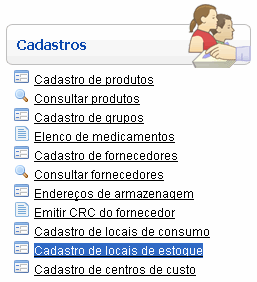
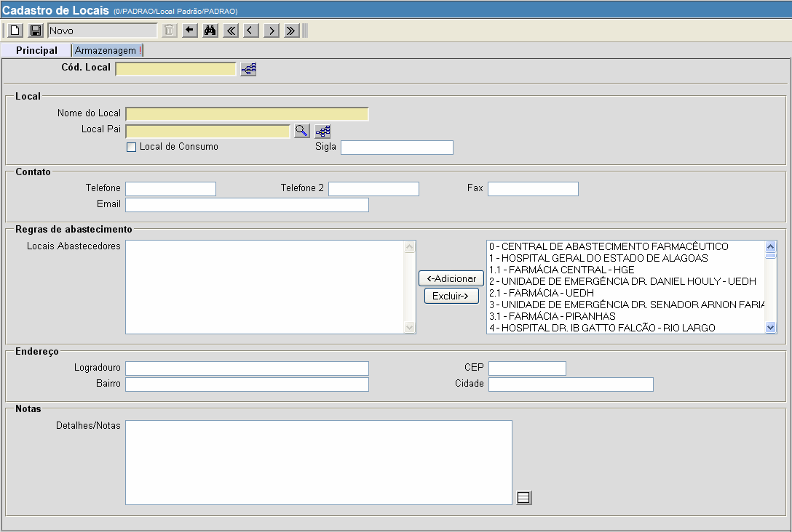
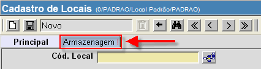

Cadastro de Locais de Estoque [ Voltar ]
Utilize este formulário para cadastrar no sistema os locais de estoque
existentes.
O formulário "Cadastro
de Locais de Estoque" encontra-se dentro do menu "Cadastros".

Ao clicar no formulário, o sistema exibirá a seguinte
tela:

Para cadastrar um local de estoque, siga os
passos abaixo:
1°
Passo: preencha os dados do local de que deseja cadastrar. Os campos em
amarelo são obrigatórios.
- Cód.
Local. Especifique um código identificador para este local.
- Nome do
Local. Informe um nome para o local.
- Local
Pai. Clique no botão
 [Procurar] para
selecionar um local hierarquicamente superior ao local que desejar
criar. [Procurar] para
selecionar um local hierarquicamente superior ao local que desejar
criar.
- Sigla.
Se desejar, especifique uma sigla para o local.
- Contatos.
Se necessário, adicione telefones, fax e email a este local.
- Locais
Abastecedores. Se desejar, selecione os locais
abastecedores que devem ser associados a este local e clique no botão
 .
Para selecionar mais de um local, pressione a tecla "Ctrl" enquanto
clica nos locais desejados. .
Para selecionar mais de um local, pressione a tecla "Ctrl" enquanto
clica nos locais desejados.
- Endereço.
Se necessário, adicione o endereço do local.
- Notas.
Você pode inserir nesta seção informações adicionais sobre o local.
2° Passo: clique na aba
"Armazenagem" para selecionar opções do local de estoque. Selecione
sim ou não para as opções de armazenagem.

3° Passo: após inserir os dados
do local, clique no botão  para
concluir o cadastro. para
concluir o cadastro.
Ir
para o topo da página
|